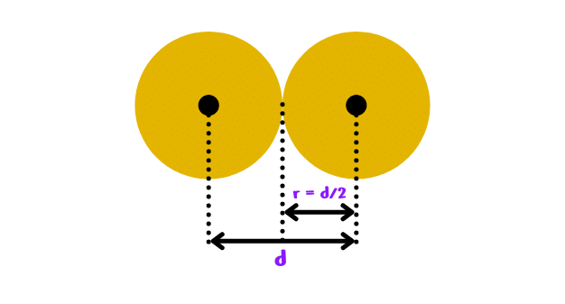
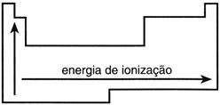
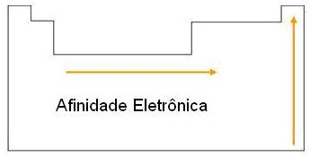
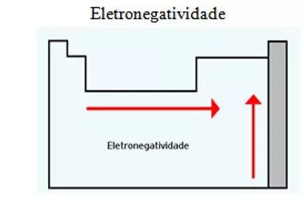

|  |
Raio Atômico
Essa propriedade se relaciona com o tamanho do átomo, e para comparar esta medida é preciso levar em conta dois fatores:
- Quanto maior o número de níveis, maior será o tamanho do átomo;
- O átomo que apresenta maior número de prótons exerce uma maior atração sobre seus elétrons.
|
| 
|
Energia de Ionização
Energia necessária para remover um ou mais elétrons de um átomo isolado no estado gasoso: quanto maior o tamanho do átomo, menor será a energia de ionização.
- Em uma mesma família esta energia aumenta de baixo para cima;
- Em um mesmo período a Energia de Ionização aumenta da esquerda para a direita.
|
|  |
Afinidade Eletrônica
É a energia liberada quando um átomo no estado gasoso (isolado) captura um elétron. Em uma família ou período, quanto menor o raio, maior a afinidade eletrônica.
|
|  |
Eletronegatividade
Força de atração exercida sobre os elétrons de uma ligação. Na tabela periódica a eletronegatividade aumenta de baixo para cima e da esquerda para a direita.
Essa propriedade se relaciona com o raio atômico, sendo que, quanto menor o tamanho de um átomo, maior será a força de atração sobre os elétrons."
|
|
Aplicação
A camada de aplicação é o topo da arquitetura TCP/IP, tratada de forma monolítica, onde são realizadas a maior parte das requisições para execução de tarefas na rede. Ela faz a comunicação entre os programas e os protocolos de transporte e é responsável por tudo que está relacionado aos serviços de comunicação que visam a interação junto ao usuário.
Dentro da camada de aplicação são utilizados alguns dos seguintes protocolos:<
TELNET (Terminal Virtual);
FTP (File Transfer Protocol);
SMTP (Send Mail Transfer Protocol);
DNS (Domain Name System);
HTTP (Hypertext Transfer Protocol).
|
|
Transporte
"A camada de transporte é a segunda camada de cima para baixo na hierarquização da arquitetura TCP/IP, e corresponde igualmente à mesma camada no modelo OSI. Neste nível são executadas ações relacionadas à confiabilidade e integridade dos dados por meio de funções como o controle de fluxo, controle de erro, sequenciação e multiplexação de mensagens.
Os protocolos definidos para esta camada são o UDP (User Datagram Protocol) e o TCP (Transmission Control Protocol), com o objetivo de garantir a conversação entre dois hosts.
|
|
Internet
A camada de internet, também conhecida como inter-redes, é responsável pela permissão de envio de pacotes por hosts a qualquer rede e pela garantia de que esses dados cheguem ao seu destino final. Equivalente ao que é operacionalizado na camada de rede do modelo OSI, na arquitetura TCP/IP a camada de internet tem como embasamento os protocolos IP (Internet Protocol) e ICMP (Internet Control Message Protocol).
|
 |
Interface de rede
Esta é a camada de base da arquitetura TCP/IP, correspondente às camadas de enlace de dados e física do OSI, onde ocorre a conexão básica do host com a rede por meio de algum protocolo capaz de enviar pacotes IP. É por meio desta camada que é possível transmitir dados a outros computadores dentro de uma mesma rede física, além de realizar o envio do datagrama recebido pela camada de internet através de meios físicos.
Para se manter em funcionamento a camada de Interface de rede utiliza como principais protocolos: Etrernet para Redes Locais (LAN – Local Area Network) e PPP (Point-to-Point Protocol) para Redes de Longa Distância (WAN – Wide Area Network).
|